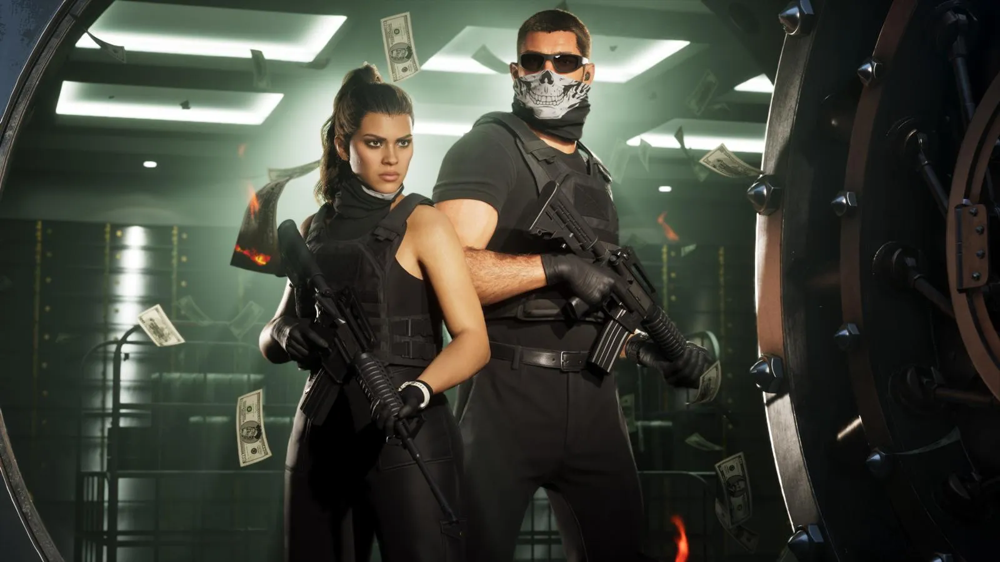
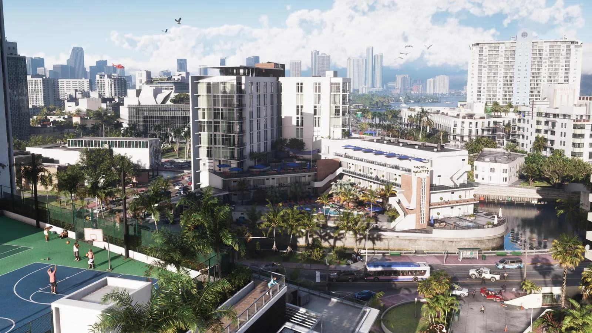

Game Informer №382 о GTA 6: погода, ураганы и животные
Опубликовано:

- Game Informer №382 вышел в цифре 29 сентября 2026: 14 страниц о GTA 6 и 12 новых скриншотов.
- Автор — Маркус Стюарт, сам выросший в Южной Флориде; он говорил с ведущими дизайнерами Rockstar.
- В игре будут тропические штормы и ураганы, а дождь — местный: в одном районе ливень, в соседнем солнце.
- После дождя остаются лужи и мокрый асфальт, ветер гнёт траву и гонит рябь по воде.
- В Леониде больше 170 видов животных — с редкими, «открываемыми» и легендарными.
Что за номер
25 сентября 2026 года американский журнал Game Informer показал обложку номера 382: Джейсон и Лусия в изрешечённом пулями розовом кабриолете — оригинальный арт Rockstar. Цифровая версия вышла 29 сентября, печатная — в следующие недели.
Внутри — 14-страничная статья Маркуса Стюарта, старшего редактора журнала. Он вырос в Южной Флориде и поговорил с несколькими ведущими дизайнерами Rockstar о том, как они строили Леониду. К статье — 12 новых скриншотов. Через месяц похожий материал выпустил британский журнал Edge (Журнал Edge №430: что Rockstar рассказала о GTA 6 за три недели до выхода).
Погода
Главная новость номера — переделанная система погоды. Оуэн Шепард, вице-президент Rockstar по арту освещения и рендеринга, сказал журналу: «Мы перестроили систему погоды, чтобы всё стало гораздо более локальным и постоянным».
- Тропические штормы и ураганы: тяжёлые тучи, сильный ветер, ливень, гром и молнии, вода льётся с краёв крыш и фонарей.
- Местный дождь: можно стоять на солнце, пока соседний район накрывает гроза.
- Облака движутся по Леониде — от чистого неба до грозовых башен с молниями.
- Последствия остаются: мокрая земля и лужи сохраняются после дождя, даже если вы приехали, когда тучи уже ушли. При нужном свете бывает радуга.
- Ветер учитывает вечерний бриз с берега, восходящий тёплый воздух и здания: на крышах кружит мусор и треплет волосы, по воде бежит рябь, в болотах гнётся трава.
Как часто будут ураганы и влияют ли они на миссии, Rockstar не сказала.

Животные
По словам Rockstar, в Леониде больше 170 видов животных на суше, в воде и в воздухе: местные — фламинго, ламантины, пеликаны, аллигаторы — и завезённые, как игуаны и жабы-аги. Животные делятся на редких, «открываемых» и легендарных. Подробно — в справочнике о видах животных.
Жители и город
Жители Леониды, по данным журнала, стали разнообразнее по телосложению и внешности — Rockstar хотела, чтобы население было похоже на разные сообщества Флориды. Много внимания разработчики уделили небольшим местам: интерьерам, крышам, переулкам.
Rockstar годами изучала Флориду для Леониды. А автор статьи — коренной житель Южной Флориды, так что «экзамен на похожесть» игре устраивал человек, который знает оригинал изнутри.
Game Informer и GTA
Game Informer — давний «официальный» партнёр Rockstar по анонсам: именно в нём в конце 2012 года вышел первый большой материал о GTA 5 с тремя героями. В августе 2024 года владелец журнала, сеть GameStop, неожиданно закрыла Game Informer, а в 2025 году его возродили новые владельцы. Обложка GTA 6 в номере 382 — одно из первых громких событий возрождённого журнала.
- Game Informer выходит с 1991 года.
- В материале о GTA 6 — 14 страниц и 12 новых скриншотов.
- Именно Game Informer подтвердил больше 170 видов животных в GTA 6.
Частые вопросы
Что рассказал Game Informer о GTA 6?
Погода, больше 170 видов животных, разнообразие жителей — подробно в статье.
Источники: Game Informer, 25.09.2026 — анонс номера 382; Game Informer, 29.09.2026 — статья Маркуса Стюарта (по Dexerto, 29.09.2026 — цитаты Оуэна Шепарда; Windows Report; eXputer; HotHardware); Game Informer — 170 видов животных; Game Informer — история журнала; The Verge, 08.2024 — закрытие.
Каждый день — одно сравнение: кадр игры рядом с реальным фото. Подписывайтесь:
YouTubeInstagramTikTok